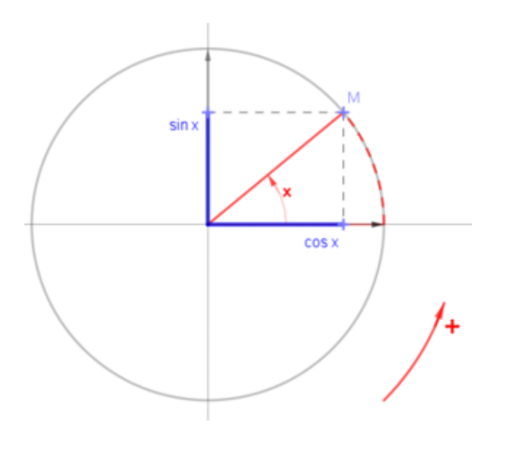
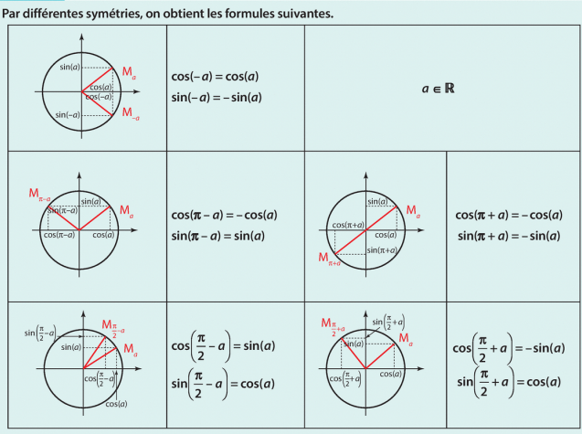
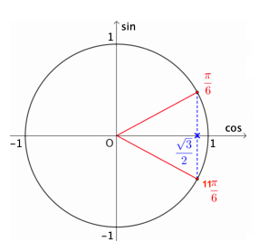

Chapitre 6 - Fonctions Cosinus et Sinus
I - Définition et premières propriétés
Définition : Soit \(a\) un réel et \(M\) le point du cercle trigonométrique repéré par \(a\).
- Le cosinus de \(a\), noté \(\cos(a)\), est l'abscisse du point \(M\).
- Le sinus de \(a\), noté \(\sin(a)\), est l'ordonnée du point \(M\).
Le point \(M\) a donc pour coordonnées : \(M(\cos(a) ; \sin(a))\).

Propriétés : Pour tout réel \(a\) :
- \(-1 \le \cos(a) \le 1\) et \(-1 \le \sin(a) \le 1\)
- \(\cos^2(a) + \sin^2(a) = 1\)
Démonstration (\(\cos^2 + \sin^2 = 1\)) :
Dans le repère orthonormé, la distance \(OM\) est :
\(OM^2 = (x_M - x_O)^2 + (y_M - y_O)^2 = \cos^2(a) + \sin^2(a)\)
Comme \(M\) est sur le cercle de rayon 1, \(OM = 1\). Donc \(\cos^2(a) + \sin^2(a) = 1\).
II - Angles associés (Symétries)
On utilise les symétries du cercle pour retrouver les relations suivantes :

À retenir graphiquement :
- Pour \(-x\) : même cosinus, sinus opposé.
- Pour \(\pi - x\) : cosinus opposé, même sinus.
- Pour \(\pi + x\) : cosinus opposé, sinus opposé.
III - Valeurs remarquables
| \(x\) (rad) | 0 | \(\frac{\pi}{6}\) | \(\frac{\pi}{4}\) | \(\frac{\pi}{3}\) | \(\frac{\pi}{2}\) |
| \(\cos(x)\) | 1 | \(\frac{\sqrt{3}}{2}\) | \(\frac{\sqrt{2}}{2}\) | \(\frac{1}{2}\) | 0 |
| \(\sin(x)\) | 0 | \(\frac{1}{2}\) | \(\frac{\sqrt{2}}{2}\) | \(\frac{\sqrt{3}}{2}\) | 1 |
IV - Résoudre une équation trigonométrique

Méthode : Résoudre \(\cos(x) = \frac{\sqrt{3}}{2}\) sur \([0 ; 2\pi]\).
- On trace la droite verticale d'abscisse \(\frac{\sqrt{3}}{2}\).
- On identifie les deux points d'intersection sur le cercle.
- On lit les valeurs des angles correspondants.
Résultat : \(S = \{ \frac{\pi}{6} ; \frac{11\pi}{6} \}\)